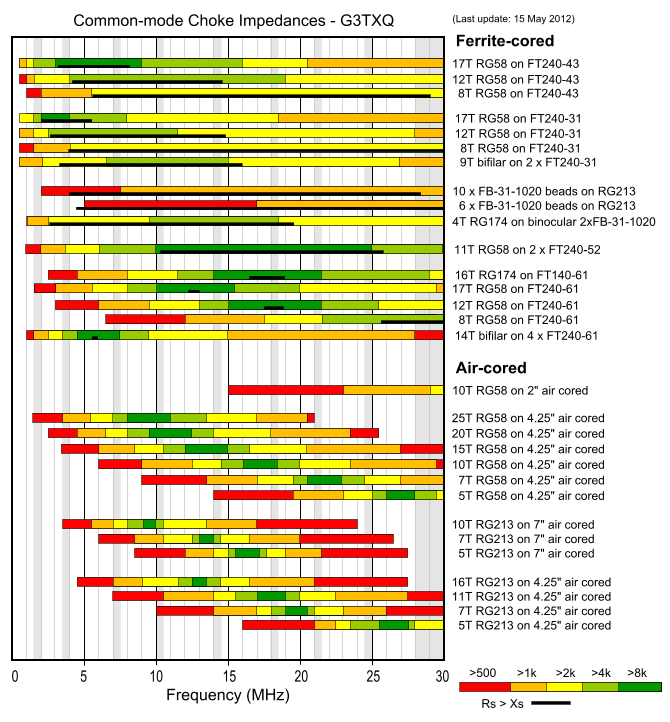
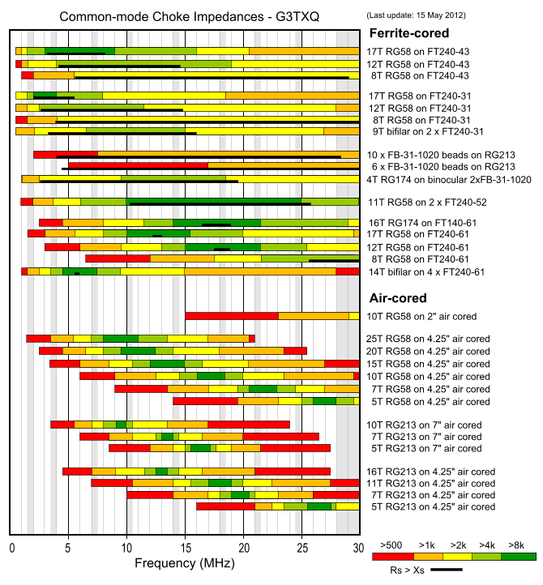

Baluns & Common Mode Chokes
Jeremy Laratro 2022
 

1:1 Common Mode Choke
This CMC / Balun was build using 2x Type 240-52 stacked for use with a hexbeam antenna operating between 14-28MHz.
Much credit goes to Steve, G3TQX who published extremely useful info both on hexbeam antennas as well as baluns and core types.
http://www.karinya.net/g3txq/baluns/baluns.pdf
Sample text. Click to select the text box. Click again or double click to start editing the text.